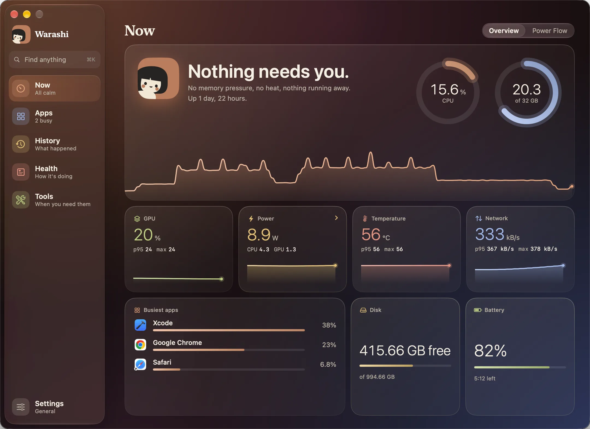
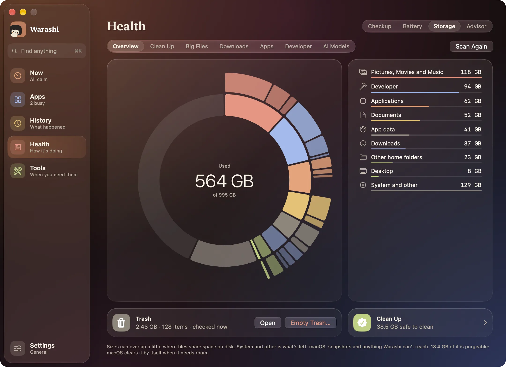

Si roh kecil yang menjaga Mac Anda.
Warashi mengawasi Mac Anda, menjaga baterainya tetap muda dan disknya lega, memberi tahu saat ada yang salah, dan mengingatkan Anda beristirahat. Satu app bar menu yang tenang, bukan sebelas.
Apple silicon · macOS 26 atau lebih baru · Beta gratis · Tanpa akun


Perawatan · Baterai
Ditahan di 80%.
Menua bertahun-tahun lebih lambat daripada baterai yang terus di 100%.
Bersih · Bersihkan
7,2 GB aman dibersihkan
Cache appBrowserLogPengembang
Istirahat · Istirahat
0:15
Alihkan pandangan dari layar.
Pemeriksaan
Semua baik.
Ketahui · Peringatan
 Google Chrome9,8 GB
Google Chrome9,8 GB
Memori hampir habis. Keluarkan app ini, atau biarkan saja.
Ketahui · Riwayat
Mengapa lambat pukul 14:02?
Xcode memakai sebagian besar prosesor.
Untuk pengembang
$ warashi agents Claude Code working · 62% left Codex done · my-app
Ketahui
Hafal Mac Anda luar kepala.
Satu roh kecil dan satu angka di bar menu, dua di samping takik, dan satu pembacaan setiap lima detik, disimpan selama setahun. Saat sesuatu terjadi, Warashi sudah tahu sebabnya.


Diberi tahu sekali
App yang lepas kendali, memori kurang, panas, disk yang makin penuh.
Sekali per masalah, dengan bukti dan satu hal yang bisa dilakukan.
Log Penerbangan · kemarin
- Musik menjaga Mac Anda tetap terjaga selama 55 mnt
- Mac Anda lambat selama 6 mnt Xcode memakai sebagian besar prosesor.
- Memori Google Chrome bertambah cepat Bertambah 1,35 GB dalam satu jam terakhir.
- Terisi hingga 100%, melewati batas 80% Anda


Perawatan
Menjaga Mac Anda tetap muda.
Baterai yang ditahan di 80% bertahan bertahun-tahun lebih lama. Pemeriksaan mingguan menangkap masalah sebelum merugikan Anda. Dan saat tiba waktunya Mac baru, Warashi tahu persis apa yang Anda butuhkan.


$249
biaya baterai MacBook Pro yang aus di Apple, di luar garansi. Baterai yang bertahan di 100% dan hangat paling cepat aus.


Penasihat Upgrade
Apakah Mac saya berikutnya perlu 32 GB?
Setelah 30 hari pemakaian nyata Anda, Warashi memberi tahu berapa banyak memori dan penyimpanan yang dibutuhkan Mac Anda berikutnya, dan apakah chip yang lebih cepat akan membantu. Dengan bukti, bukan tebakan di kasir.
Bersih
Menjaga disk Anda tetap lega.
Lihat apa yang memenuhi disk, bersihkan yang kembali sendiri sekaligus, dan hapus app beserta semua sisanya. Semuanya masuk ke Tong Sampah, jadi tidak ada yang hilang karena salah.
Bersihkan
Semua yang bisa dihapus, menurut tingkat kehati-hatiannya.
- Aman dibersihkanCache app dan browser, log, data build Xcode. Semuanya kembali sendiri.7,2 GB
- Lihat duluInstaller lama, salinan kedua unduhan, salinan lampiran Mail.1,4 GB
- Tangani dengan hati-hatiCadangan iPhone dan iPad, yang mungkin satu-satunya salinan.38 GB


Uninstaller
Hapus app dengan benar.
Setiap app beserta sisanya di Library Anda, dimulai dari yang sudah berbulan-bulan tidak Anda buka. Ditambah sisa app yang Anda hapus bertahun-tahun lalu.
Tidak pernah file Anda
Hanya nama, ukuran, dan tanggal.
Warashi tidak pernah membuka dokumen. Akses Disk Penuh bersifat opsional.
Tong Sampah
Sudah dikosongkan. 4,8 GB dibebaskan.
Pengingat saat Tong Sampah membesar, dan angka sebenarnya saat Anda mengosongkannya.
Istirahat
Dan ia menjaga Anda.
Istirahat yang lembut untuk mata dan punggung Anda, layar yang lebih tenang saat Anda perlu fokus, dan Mac yang tetap terjaga persis selama yang dibutuhkan pekerjaan.


Tetap Terjaga
Selama satu jam, sampai pekerjaan selesai, atau dengan tutup tertutup.
Untuk unduhan, build, atau presentasi.
Hal-hal kecil
- Kecepatan internet dan disk
- Kualitas Wi‑Fi
- Layar hitam untuk membersihkan
- Sembunyikan ikon desktop
- Bisukan mikrofon
- Keluarkan Semua


Untuk pengembang
Ada apa di port itu? Berapa biaya agen itu?
Claude Code, Codex, dan Cursor: apa yang sedang dikerjakan masing-masing, berapa sisa batas Anda, dan pengingat di takik saat salah satunya membutuhkan Anda. Server dev per proyek, Docker, model AI lokal di memori, dan gigabyte yang ditinggalkan alat-alat Anda.


Perintah warashi
$ warashi explain 14:30 Memory ran short Swap rose from 1.2 GB to 8.6 GB. $ warashi apps --hours 3 Xcode CPU 37m 35s 9.4 GB Safari CPU 26m 22s 6.1 GB
Dan koneksi MCP opsional yang hanya-baca, agar Claude, Cursor, dan app AI lain bisa menjawab dari riwayat Mac Anda. Tidak ada yang dibagikan kecuali Anda menambahkannya.
Satu app yang tenang, di tempat yang dulu dipenuhi selusin app.
Untuk mendapatkan semua yang dilakukan Warashi, Anda harus memasang sebelas app. Berikut lacinya, dengan harga dari situs masing-masing pembuat. Bukan bermaksud menjelekkan: mereka hebat dalam satu hal itu.
- Pembacaan langsung di bar menu, dengan riwayatiStat Menus 7$11,99sekali bayar
- Pembersihan, uninstaller, sisa file, pemindaian malwareCleanMyMac$39,95setahun
- Peta dari apa yang memenuhi disk AndaDaisyDisk$9,99sekali bayar
- File duplikatGemini 2$19,99setahun
- Batas pengisian, isi penuh, jadwalAlDente Pro€11,49setahun
- Kesehatan baterai dari bulan ke bulancoconutBattery Plus€9,95sekali bayar
- Istirahat dan pengingat posturLookAway$19sekali bayar
- Fokus Lembut: semua kecuali jendela Anda, diredupkanHazeOver$4,99sekali bayar
- Tetap terjaga, bahkan dengan layar tertutupAmphetamineGratis
- Batas Claude Code, Codex, dan CursorCodexBarGratis
- Pembersihan Xcode dan simulatorDevCleaner for XcodeGratis
- Momen mana pun dari setahun terakhir dijelaskan, dan berapa daya yang dipakai tiap appTidak ada app yang menjualnya–
≈ $130tahun pertama, lalu ≈ $73 setiap tahun berikutnya
Berapa biaya kesebelasnya bersama, untuk satu Mac. Tiga di antaranya berlangganan, dan masing-masing punya pengaturan, pembaruan, dan item bar menu sendiri.
$0selama Warashi masih beta
Semua di atas, dalam satu app. Warashi 1.0 akan menjadi pembelian sekali bayar. Tanpa langganan, selamanya. Riwayat dan pengaturan Anda ikut terbawa.
Harga diambil dari situs masing-masing pembuat atau Mac App Store pada November 2026, untuk satu Mac; harga euro dikonversi dengan kurs sekitar $1,15. Harga berbeda menurut wilayah dan promosi. Setiap app adalah yang akan kami pilih untuk bagian itu: sebagian melakukan lebih banyak daripada Warashi di sana, dan Warashi tidak melakukan semua yang mereka lakukan.
0.2%
satu inti di latar belakang. Sama sekali tidak ada saat layar Anda tidur.
60MB
memori, biasanya, dengan jendela tertutup. Swift asli, dibuat untuk Apple silicon.
0 akun
Unduh, buka, selesai. Riwayat Anda tidak pernah meninggalkan Mac Anda.
Privat sejak awal
- Tanpa akun, tanpa cloud, tanpa telemetri tentang app atau file Anda.
- Tanpa perekaman layar, tanpa ketikan, tanpa isi file, selamanya.
- Hanya statistik penggunaan anonim, diungkapkan di tur sambutan. Persis apa yang dikirim
Lihat dalam dua menit.
Pertanyaan bagus.
Apa itu warashi?
Dalam cerita rakyat Jepang, zashiki-warashi adalah roh kecil penunggu rumah. Rumah yang ditinggalinya konon akan makmur. Roh kami tinggal di bar menu Anda dan menjaga Mac Anda.
Mac apa saja yang bisa menjalankannya?
Mac dengan Apple silicon (M1 dan yang lebih baru) yang menjalankan macOS 26 atau lebih baru.
Apakah gratis?
Gratis selama beta. Warashi 1.0 akan menjadi pembelian sekali bayar, tanpa langganan. Riwayat dan pengaturan Anda ikut terbawa.
Bisakah saya tetap memakai AlDente atau CleanMyMac?
Bisa, tetapi dua pengelola pengisian akan berebut batas, jadi pakai satu saja. Warashi memberi tahu Anda saat melihat yang lain berjalan.
Apakah memperlambat Mac saya?
Tidak. Sekitar 0,2% dari satu core di latar belakang dan 60 MB memori, diukur dan ditampilkan di Pengaturan.
Apa bedanya dengan Monitor Aktivitas?
Activity Monitor menampilkan detik ini. Warashi mengingat apa yang terjadi saat Anda tidak melihat, memberi tahu Anda saat itu penting, dan menjaga baterai, disk, dan Anda.

Dibuat oleh satu orang, dengan penuh perhatian.
Hai, saya Adam, pengembang independen. Warashi adalah proyek saya sendiri: app-nya, desainnya, dan situs web ini. Saya ingin ini menjadi app Mac yang saya sendiri senang memakainya: tenang, jujur soal angkanya, dan ringan di Mac Anda. Jika Anda punya ide, atau ada yang kurang tepat, tulislah kepada saya.
Adam
Biarkan si roh kecil yang tenang
menjaga Mac Anda.
Gratis selama Warashi masih beta. Satu unduhan kecil, tanpa akun, dan mulai malam ini Mac Anda ada yang menjaganya.